Prototype access
Task-B Sailing Training Tool
Enter the prototype password to continue. This screen is intended to discourage casual access while the tool is still in development.
Task-B Instructional Tool · v0.6.19

Prototype access
Enter the prototype password to continue. This screen is intended to discourage casual access while the tool is still in development.
Task-B Instructional Tool · v0.6.19